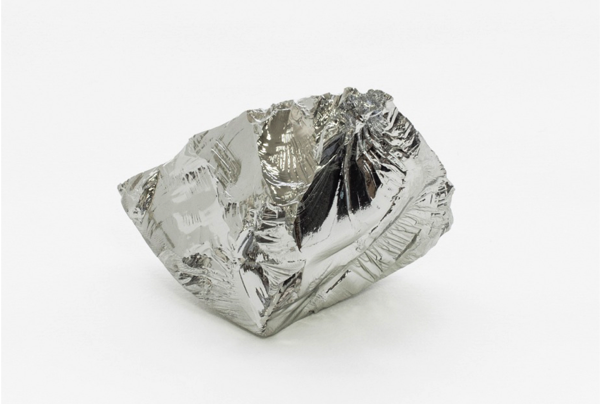
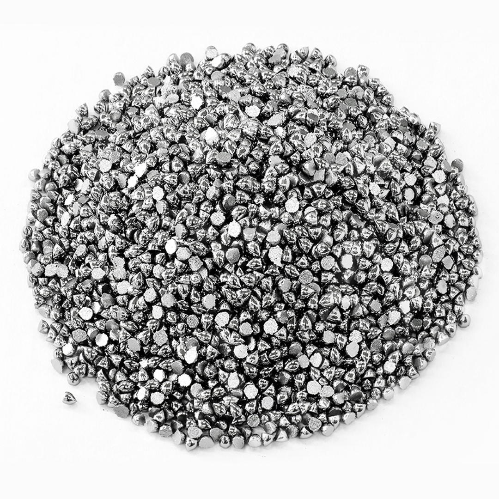
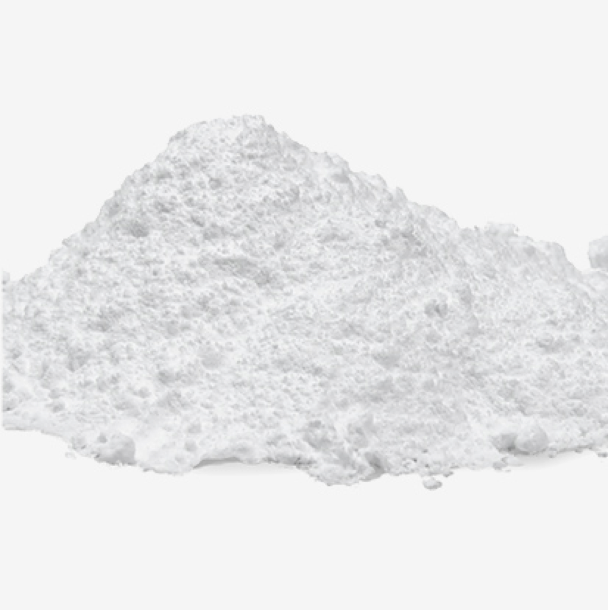
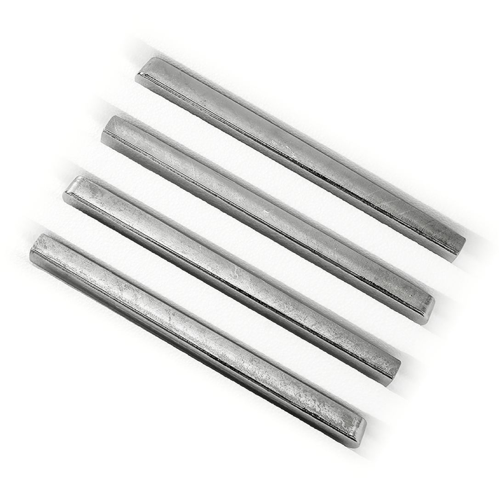
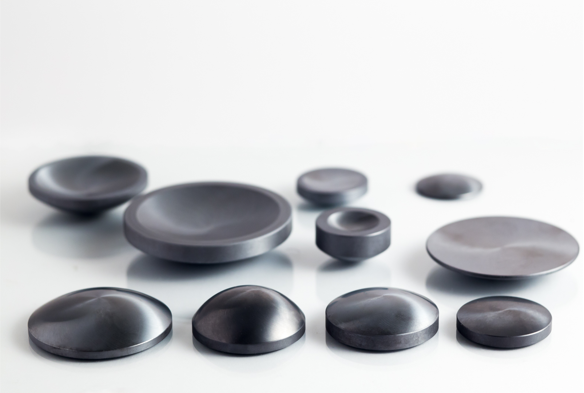
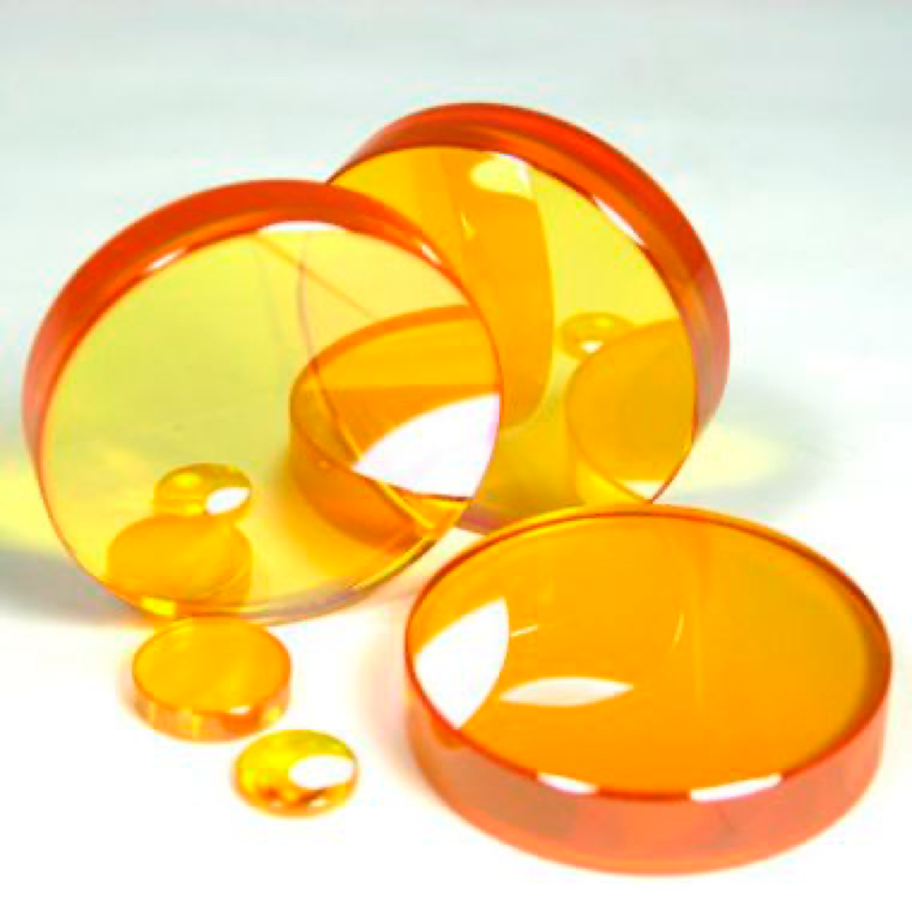
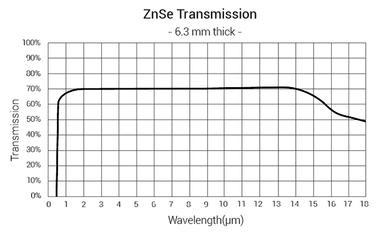
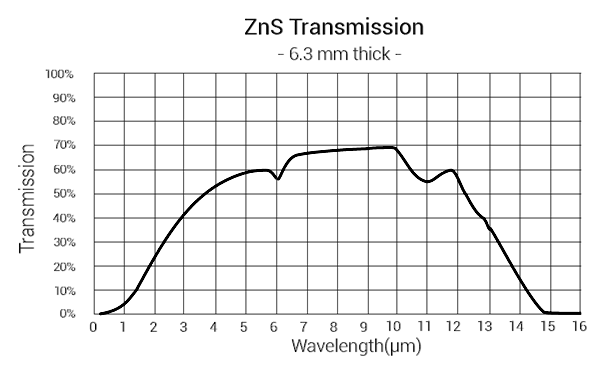

- About us
- Germanium
- Germanium Granules
- Germanium Optics
- Germanium Dioxide (GeO2)
- Polycrystalline Germanium (GPZ)
- Silicon
- Zinc Selenide (ZnSe)
- Zinc Sulfide (ZnS)
- Recycling
- Contact us
NightHawk Solutions is proud to provide the highest-quality infrared optical materials and substrates to our valuable customers in the commercial, aerospace, defense and semiconductor industry. Our main products include, but not are limited to, germanium, silicon, zinc selenide (ZnSe), zinc sulfide (ZnS) windows, mirrors, lenses, prisms and wafers.
Here at NightHawk Solutions we are proud to be a provider of germanium recycling services helping the production facilities to do the business more cost-effective and cleaner. You are welcome to contact us with any questions and concerns related to the recycling of germanium.
Germanium is widely used in fiber optics, infrared optics, semiconductors and solar applications. It is considered a strategic material for many military and commercial applications.
The NightHawk Solutions" list of products includes, but is not limited to, the following items:
— Optical elements of various shapes and configurations (windows, wafers, prisms, lenses) per individual customers’ specification
— Germanium dioxide
— GeO2 (up to 99.9999%
— Polycrystalline germanium
— GPZ (up to 99.9999%)
— Germanium granules (up to 99.999%).
Germanium granules are primarily used for evaporating and coating processes, where high-tech applications are regularly sensitive to the pureness and quality.
NightHawk Solutions is able to provide 99.999% pure germanium granules with low oxygen content conforming to the most demanding requirements.
In 2-14 μm range infrared optical systems, germanium is the most widely used material for making lenses and windows.
NightHawk Solutions offers a wide range of germanium optical elements per customers’ specifications: windows, wafers, prisms, and lenses. All the optics are available both raw and finished as per request.
The refractive index and optical dispersion properties of germanium dioxide make it useful as an optical material for wide-angle lenses, in optical microscope objective lenses, and for the core of fiber-optic lines.
Germanium dioxide is also used in catalysts for polymerization in the production of polyethylene terephthalate (PET).
Polycrystalline germanium is mainly used as a raw material in the single crystal growing process. Insofar as the quality of monocrystalline germanium depends principally on the technology and source material, high quality GPZ is considered essential for the pulling process.
NightHawk Solutions offers 99.9999% polycrystalline germanium suitable for growing.
Commonly, silicon is considered as the material of choice for systems operating in the Middle Infrared (MIR) region, from 3 to 5 µm. But in fact, the material may be used in a much broader operating range — from 1.2 µm to 1000 µm or even higher.
Due to its high absorption at a wavelength of 9 µm, optical silicon is not used in CO2 lasers as transmitting optics, but is widely used for the production of mirrors.
NightHawk solutions offers silicon windows, mirrors, witness samples, and lenses.
Zinc Selenide (ZnSe) is widely used in CO2 laser components, infrared spectroscopy, imaging systems, IR pyrometers, surveillance and detection systems.
Zinc Selenide is transparent in wide spectral range from visible to far infrared. ZnSe material is a chemically inert, non-hygroscopic and highly pure product that is very effective in many optical applications due to its extremely low bulk losses, high resistance to thermal shock and stability in virtually all environments.
NightHawk Solutions is able to provide windows, lenses, prisms and custom-made ZnSe optics.
Zinc Sulfide (ZnS) is used in high-speed optical systems designed for the air force. It helps to detect and destroy low-temperature targets (radomes of self-targeting missiles, guided missiles and bombs, laser location systems), as well as other optical systems operating both in the visible and infrared (3-5 microns and 8-12 microns) spectrum.
NightHawk Solutions is able to provide large optical elements made of high purity zinc sulfide by chemical vapor deposition.
Germanium’s abundance in the Earth’s crust is approximately 1.6 ppm. Only a few minerals like argyrodite, briartite, germanite, and renierite contain appreciable amounts of germanium, but there are none in mineable deposits. Germanium seldom appears in high concentrations. It is mainly a byproduct of zinc ore processing.
The importance of recycled germanium recovered from end-of-life products, such as fiber optics, military vehicles, and solar cells, should not be underestimated. Recycling is expected to increase during the next two decades as aging products are taken out of service.
Worldwide, about 30% of the total germanium consumed is produced from recycled materials.
NightHawk Solutions asks you to consider recycling your germanium refuse items, broken optics, technology wastes and liquids. We work with germanium as low as 2% content solutions and compounds to give a second life to germanium products.
You are welcome to contact us with any requests and concerns related to the recycling of germanium.
We sincerely appreciate any feedback and invite you to exchange your ideas with us!